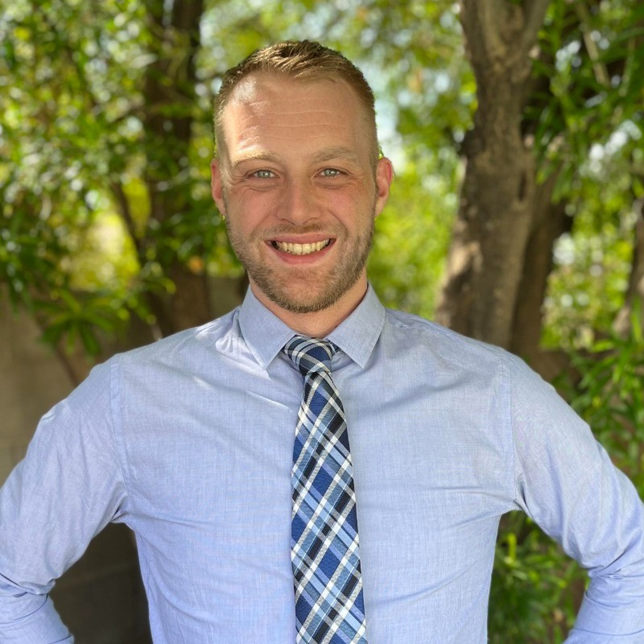

Welcome to my online resume

Professional Summary
Passionate IT Site Reliability Engineer and application developer with 10+ years of experience within large Enterprise IT landscapes. Customer focused and detail-oriented while identifying opportunities for process improvements. Ability to clearly communicate and translate business requirements into IT functionality. Multi-lingual; fluent in English, Dutch (Native), and German.
Experience
General Motors | Chandler, Arizona
- Led Center of Excellence office hours where performance standards were elaborated on and how developers could best use and apply them in their specific deployments
- Created observability by creating metrics dashboards in tools such as Dynatrace and Grafana.
- Improved business user experience by providing Level 3 dedicated support.
- Drove up development speed by taking on bugs out of QA and applying Performance best practices.
- Execute comprehensive load tests and determine overall application robustness while maintaining mission-critical SLAs.
- In-depth knowledge and experience with VuGen (LRE), Dynatrace (next gen), Kubernetes, MS Azure, Grafana and more
- Proficient with Oracle and PostgreSQL DB Performance and can navigate tools like pgAdmin and provide explain plans for DB / SQL optimization feedback to the dev teams
General Motors | Warren, Michigan
- Performance Engineer for multiple organizations within General Motors IT
- Provide production support for diverse application stacks such as .NET & Java
- Provide support for platform migrations. On-prem, hybrid and full cloud deployments
- Execute comprehensive load tests and determine overall application robustness while maintaining mission-critical SLAs
- In-depth knowledge and experience with VuGen (LRE), Dynatrace (next gen), Kubernetes, MS Azure, Grafana and more
General Motors | Warren, Michigan
- Created more visibility and supporting transitions of the monitoring toolsets.
- Project manager to improve monitoring in GM Global IT Ecosystems
- In-depth knowledge and experience with HP BSM, SiteScope, HPOM, ITSM and dynaTrace toolset
Lochbridge LLC (Former Compuware) | Detroit, Michigan
- IT-Business Analyst for OnStar
- Managed and executed monitoring integration in the newly established European Datacenter
- Responsible for IT OPS Metrics Reporting on a daily basis
- Creation and maintenance on executive Metrics Dashboard
- Call Center IT Support (Data Analysis)
- IT Monitoring Global Support
Education
- Washtenaw Community College | Ypsilanti, Michigan
- Linux/Unix and Cisco Networking classes
- Stenden University | Leeuwarden, Netherlands
- Noorderpoort College | Groningen, Netherlands
Skills
- Excellent verbal, written communication and interpersonal skills
- IaaS, PaaS, SaaS knowledge
- Azure Certified, Cloud Foundry, Kubernetes
- Dynatrace, APM, Monitoring
- Loadrunner, LRE, VuGen, Load Testing, JVM
- Microsoft Office & SharePoint
- Windows and Linux/UNIX Platforms
- C, Python & Java
Awards & Recognitions
- CTT - Critical Talent Award
- GMIT recognizes me as a critical asset to the organization
- Monetary award meant to encourage retention